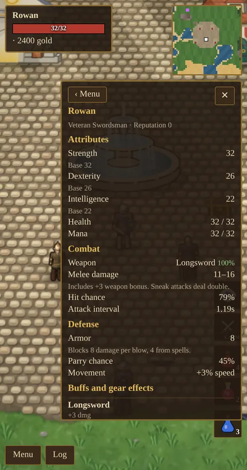

Chapter 2 of 11
Attributes
Three attributes shape your hero. They start where you put them and grow as you use your skills.
The three attributes
| Attribute | What it does |
|---|---|
| Strength | Your maximum health equals your Strength. Adds +1 melee damage for every 12 points. Heavier armor needs more Strength to wear. Helps you mine. |
| Dexterity | Shortens the time between your attacks and makes you walk faster (up to about 19% faster). |
| Intelligence | Your maximum mana is 10 + Intelligence. Raises spell damage, and makes every skill improve a little faster. |
The bonus from Dexterity, Intelligence and skill gain is gentle and steady. Each point above 10 adds a fraction of a percent, so the difference between 10 and 100 is large, but a few points either way barely matter.
| Attribute value | 10 | 40 | 70 | 100 |
|---|---|---|---|---|
| Health (from Strength) | 10 | 40 | 70 | 100 |
| Extra melee damage | +0 | +3 | +5 | +8 |
| Time between sword swings (Dexterity) | 1.30s | 1.11s | 0.98s | 0.87s |
| Walk speed (Dexterity) | base | +5% | +11% | +17% |
| Mana (from Intelligence) | 20 | 50 | 80 | 110 |
| Spell damage and skill gain (Int) | ×1.00 | ×1.20 | ×1.40 | ×1.60 |
How attributes grow
Each time one of your skills goes up, there is a 12% chance that the attribute tied to it goes up by 1. Attributes stop growing at 100. Using a skill therefore trains its attribute too.
| Attribute | Grows from |
|---|---|
| Strength | Swordsmanship, Parrying, Lumberjacking, Mining, Blacksmithing |
| Dexterity | Archery, Sneaking, Pickpocket, Jewelcrafting |
| Intelligence | Magery, Meditation, Tactics, Arms Lore, Enchanting, Begging |
Temporary and gear boosts
Your shown attribute can be higher than your base value:
- Gear: magic items and enchanted jewelry add attribute points. A worn-out item gives less (see durability).
- Blessing: Brother Aldric or Sister Elara bless you for a 50 gold donation. It gives +10 to all three attributes for 10 minutes and earns 8 reputation.
- Polymorph: orc form gives +10 Strength, undead form +10 Strength and Intelligence, and rat form +10 Dexterity and Intelligence.
- Raven familiar: +10 Intelligence while it rides on your shoulder.
The character sheet
Tap your name at the top left to open the character sheet. It works out the numbers that matter in a fight:
- Attributes, each with a breakdown of where the points come from (base, gear, blessing, form, raven).
- Health and mana.
- Combat: your weapon and its condition, melee or arrow damage range, hit chance, attack interval, any fire, cold or lightning damage from gear, and the damage range of your known spells.
- Defense: armor (how much damage each blow loses), parry chance, movement bonus and mana regeneration.
- Buffs and gear effects: blessing and polymorph timers, your familiar, whether you are sneaking or wanted, and every item’s bonuses.
The sheet is the best place to compare gear. Equip a new piece, open the sheet, and look at what changed.
